Royalty SMP Kingdoms
Build a nation, earn authority, craft tokens, and go to war. This is the complete guide to the server.
Killing someone takes 10% of their coins

Vote for the Server
Plugins & Datapacks
- Dungeons And Tavernsdatapack
- Smartsaddleplugin
- Banner Flagsdatapack
- Vanilla Tweaks Packdatapack
- Infinite Villager Tradingplugin
- String Dupers Returnplugin
- Bigdoorsplugin
- Gsitplugin
- Imageframeplugin
- Invisiblekillplugin
- Clickvillagersplugin
- Amhdatapack
- Faster Ghastdatapack
- Longer Strength Potionsdatapack
- Mastercutterdatapack
- Breweryxplugin
Not everything is listed but things we thought were important
TL;DR
This is good to read to get a general idea however you should read specific pages whenever you get to them on the server so you can get more of the specifics If you click on any text you can go to the tab it is on for more information
Horses can be picked up by removing their saddle
In rules the newest rules have a * in front of them
Recipes has many changes so it is worth to check out
Authority is basically lifesteal up until your at 15 hearts where it changes to the following
| Personal authority | Perks (on top of 15 hearts) |
|---|---|
| 160 personal authority | Speed I |
| 170 personal authority | Strength II, Speed I |
| 180 personal authority | Strength II & Speed I & Fire Resistance I |
| 190 personal authority | Strength II, Speed II & Fire Resistance I |
| 200 personal authority | Strength II, Speed II, Resistance I & Fire Resistance I |
National Authority can be gained in the following ways
- All players personal authority minus 50
- All cities will grant 50-250 national authority
- Every 5000 blocks claimed will grant 1 national authority
- Dying and losing the crown will lose 30 National Authority
- Max of 3000 National Authority
| Name | Restrictions | Requirements |
|---|---|---|
| Settlement | Crowns locked, 0 outposts, 0 cities, max 750x750 area, Government locked, 0 guardsmen | None |
| Principality | Crowns locked, 0 outposts, 1 cities, max 1000x1000 area, Government locked, 1 guardsmen | 150 total National Authority (excludes purchases in government) |
| State | Crowns locked, 1 outpost, 2 cities, 1 capital, max 1500x1500 area, Government locked, 1 guardsmen | 400 total National Authority (excludes purchases in government) |
| Kingdom | Crowns unlocked, 1 outposts, 3 cities, 1 capital, max 2000x2000 area, Government unlocked, 1 guardsmen | 750 total National Authority (excludes purchases in government) |
| Empire | Crowns unlocked, 1 outposts, 4 cites, 1 capital, max 3000x3000 area, Government unlocked, 2 guardsmen | 1200 total National Authority (excludes purchases in government) |
| Imperium | Crowns unlocked, 2 outposts, 5 cites, 1 capital, max 4500x4500 area, Government unlocked, 2 guardsmen | 1750 total National Authority (excludes purchases in government) |
| Hegemony | Crowns unlocked, 3 outposts, 1 capital, Government unlocked, 2 guardsmen | 2500 total National Authority (excludes purchases in government) |
Upon developing a certain part of your town and asking the staff you can make it a city
Upon getting a 2nd city and unlocking capitals your first city becomes a capital city which does the following
- You need to have a capital to have crown(s) in your nation
- To raid a capital city all other cities have to be raided/taken first
- In your capital city you get a chest that you can store custom items in if your capital is taken these are lost
Roads do the following the blocks must also be a 3x3
- Path blocks grant permanent Speed I on mount Speed III
- Gravel blocks grant permanent Speed II on mount Speed IV
- Concrete blocks grant permanent Speed III on mount Speed V
Guardsmen is a role assigned by the leader and does the following
- In war and claim resistance I
- Outside of war and in claim resistance II
- Can kick people out of a claim
To raid someone you must give a 24 hours justification and have enemy status with them then staff will find a time when the most amount of people will be able to get on after 24 hours during a raid you cant break or place non pvp things breaking in should be done with tnt for rp reasons to make a nation force surrender you need control over all their cities
You can build outposts in other people's claims these must have a 3x3x3 entrance these can be used to regear/respawn during a war they can be griefed with a pickaxe outside of war
There are 5 relationship statuses Allied, Defensive, Neutral, Hostile, and Enemy
You can do the following in a peace treaty
- Max reparations all winners can demand are 30% in total of all players in the nations (Will be taken automatically)
- You can conquer all cities but the capital city
- You can conquer all claimed land that isnt a city
- You can take all custom items
- You can force Non-aggression Pacts
You can pick the following governments and they grant the following buffs
- Democracy - Mostly defensive and support buffs
- Communism - Mostly defensive, most biome buffs, and resource buffs
- Monarchy - Balanced, Most power to the crown, leader dying is more consequential
- Facism - Mostly offensive buffs
You can also change the following laws
- Income taxes
- Sell taxes
- Exiles/Outlaws
- PVP
Based off the biome your capital city is you can pick various buffs default you can pick 3 biome buffs for your crown and 1 biome buff for your citizen
Important commands
/bounty/nation/marry/authority/daily/duel/family/class/playtime/chaosmeter/playtimetop/stream/record/doc/discord/map/rep/gambleRules
Max punishments listed below rules based on color
Staff members get final say of what's allowed in cases of where someone is abusing a rule
No using loopholes in the rules
Whitelist can be removed in certain scenarios usually after many repeat cases or them just joining the server
Discord rules also apply
Rules tagged NEW are the most recently added.
ITEM RULES
- No Ender Pearls
- No poison, slow falling, weakness, or slowness potions (Potions you'd apply to your enemy) or tipped arrows (Except Harming I) in combat.
- No bed bombs, end crystals, and respawn anchors in combat
- No Riptide
- No Breach or Density
- No Protection IV
- No Sharpness V
- No Netherite weapons (Sword/Axe)
- No Lunge spears
- NEWNo shulkers in ender chest
- NEWCrafted Authority cannot be used once a player is at/above 100 authority(any sort of attempt to bypass this will be a violation)
- NEWDon't destroy the economy of Authority (Like giving out all your authority than leaving forever)
- No storing tokens in any type of storage
- No holding tokens for no reason unless youve a crown
If a banned item is used the player attacking them can have everything they had or if they're murdered their stuff back and there will be a temp ban of 12 hours which doubles for each violation max of 192 hours
ITEM MODIFICATIONS
- TNT minecarts do a maximum of 10 hearts of damage.
- Strength II lasts for 8 minutes instead of 1 minute and 30 seconds
- NEWEnder chest have only 15 slots
- NEWMaces do a maximum of 10 hearts of damage
- NEWFaster Happy Ghasts
GENERAL RULES
- Stream sniping (watching another member's livestream, VOD or video without permission)
- Using F3+A to locate entities through blocks is banned
- Contracts are server enforced. There must be an in-game book outlining terms and conditions for it to be valid
- NEWBases must be located above ground, Stashes and spawnpoints can be hidden underground
- NEWBases can only be in the overworld
- NEWNo using any blocks that require an iron pickaxe or stronger to break/collect for base defense
- NEWNo putting water/lava on the walls of your base
- NEWOverall make your bases look pleasant
- No destroying claims unless in a war
- Killing AFK players while they're at a farm is not allowed. Pretending to be AFK or deliberately stalling your return to the game is frowned upon and could be a violation
- Griefing spawn unless its a weapon or trap being griefed
- Combat-logging and danger-logging (logging when it looks like someone is gonna fight you) is banned
- No using /tpa /home /spawn or any commands that tp you when you're in combat or are about to be in combat
- No killing players if they are obviously lagging out.
- NEWNo using Armorer or Cleric Villagers
- No trapping the spawn block (Where you go with /spawn)
- All tokens being destroyed will result in the season ending
- Exploits/cheats (duping, hacking, lag switching, etc)
- Every player must be over or 13 years old (Unless they were already playing)
- No bad/breaking the RP on purpose
7 day ban and staff will attempt to recover losses if any
3 day ban (doubles for each violation) and staff will attempt to recover losses
30 day ban and staff will attempt to recover losses if any
DISALLOWED MODS (not all disallowed mods but common ones)
- Freecam that go through blocks are banned. Non-ghosting freecams are allowed for building purposes
- Xray
- Baritone
- Hack clients
- Seed Cracking
- World Maps and Minimaps that show Entities and caves
- Health indicators / Damage indicators
- Armor Durability (other players)
- Effect Tracers (Makes particles obvious)
- Inventory manipulation (unnatural inventory management, mouse tweaks is allowed though)
- Replay mod or flashback mod (for finding bases or other structures)
14 day ban and staff will attempt to recover losses
30 day ban and staff will attempt to recover losses if any
3 day ban (doubles for each violation) and staff will attempt to recover losses
If you have any suggestions to add here or are unsure about a mod make a ticket
Recipes
Many recipes on the server are custom. Check here before crafting.
Class-Only Crafts
Only certain classes can craft these. See Classes for how to get one.
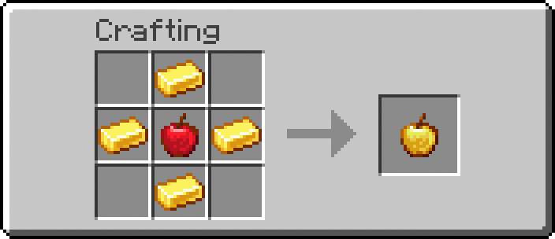
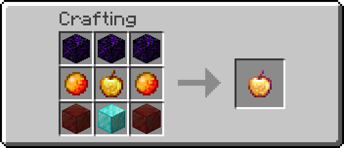
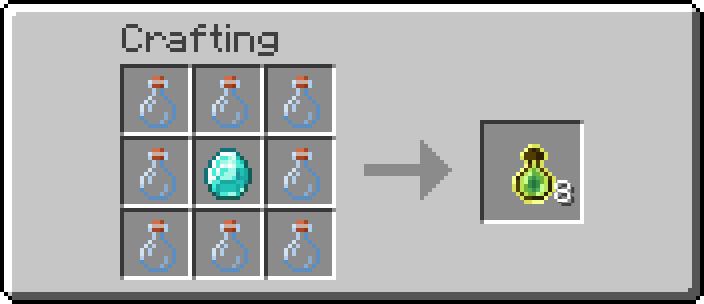

Revive Beacon & Level Up Items
Only the Priest class can craft these.
Each Level Up item gives +10 personal authority. Crafted authority cannot be used once a player is at or above 100 authority.

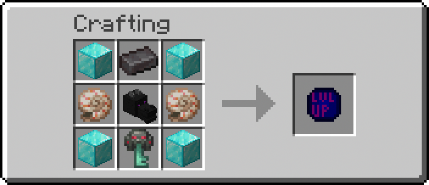
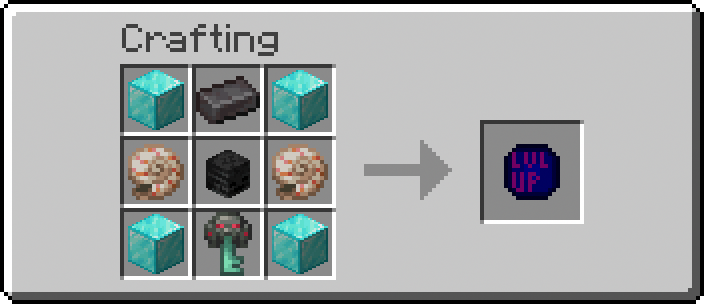
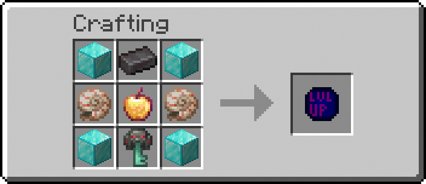
National Authority
Craftable by everyone, no class needed.
Using the National Authority item gives your nation +10 national authority. It needs 2 Level Up items, 6 enchanted golden apples and a nether star.
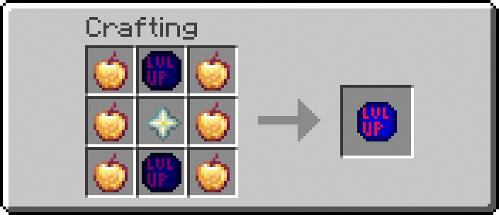
Cat Ears & Collars

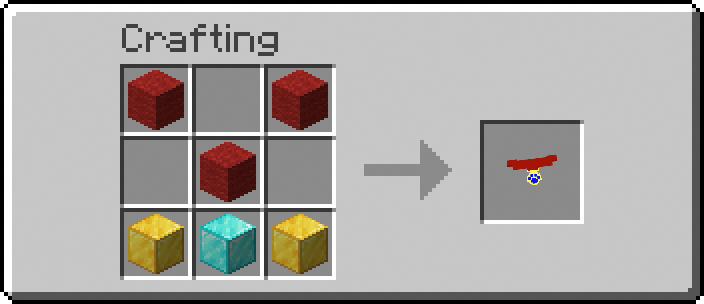

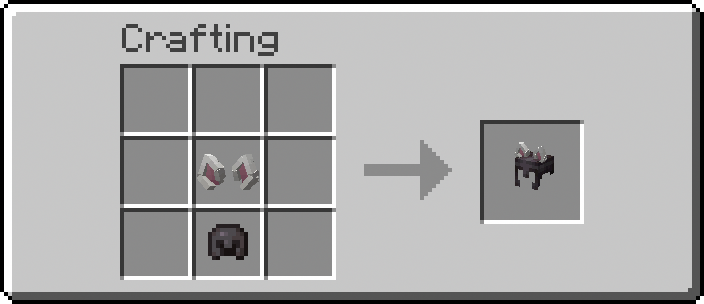

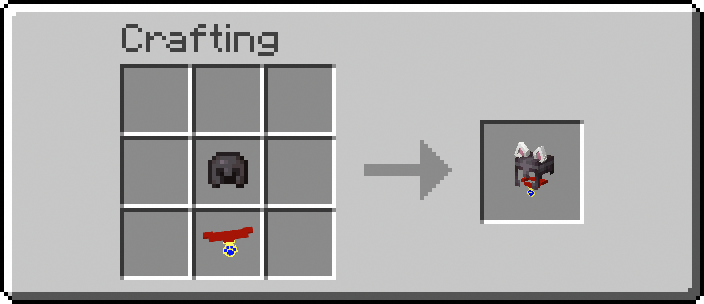
Materials
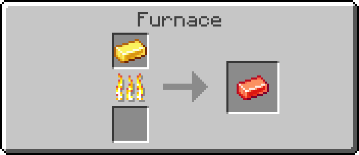
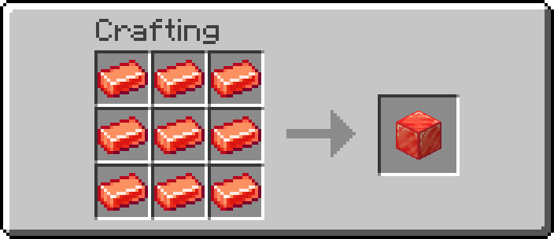

Other Special Recipes
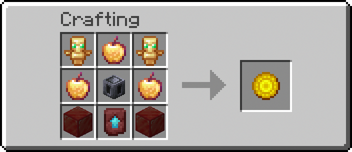
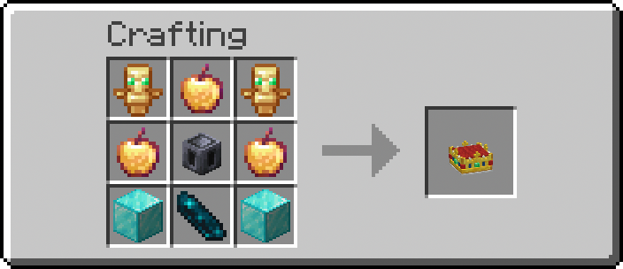

Claims
| Name | Restrictions | Requirements |
|---|---|---|
| Settlement | Crowns locked, 0 outposts, 0 cities, max 750x750 area, Government locked, 0 guardsmen | None |
| Principality | Crowns locked, 0 outposts, 1 cities, max 1000x1000 area, Government locked, 1 guardsmen | 150 total National Authority (excludes purchases in government) |
| State | Crowns locked, 1 outpost, 2 cities, 1 capital, max 1500x1500 area, Government locked, 1 guardsmen | 400 total National Authority (excludes purchases in government) |
| Kingdom | Crowns unlocked, 1 outposts, 3 cities, 1 capital, max 2000x2000 area, Government unlocked, 1 guardsmen | 750 total National Authority (excludes purchases in government) |
| Empire | Crowns unlocked, 1 outposts, 4 cites, 1 capital, max 3000x3000 area, Government unlocked, 2 guardsmen | 1200 total National Authority (excludes purchases in government) |
| Imperium | Crowns unlocked, 2 outposts, 5 cites, 1 capital, max 4500x4500 area, Government unlocked, 2 guardsmen | 1750 total National Authority (excludes purchases in government) |
| Hegemony | Crowns unlocked, 3 outposts, 1 capital, Government unlocked, 2 guardsmen | 2500 total National Authority (excludes purchases in government) |
Cities
Upon developing a certain area of your claim heavily enough staff will upgrade that area into a city which offers certain buffs listed in other sections
The amount of authority cities gives is very dependant on what's in the city staff will be looking at the following things to decide how much it gives (If you added to your city and want to see if its worth more contact a staff)
Roads, Walls, Farms, Villagers, Building
Cities must have signs with the cities name on it and the team name
Capital City
Upon getting a 2nd city into your nation your first city will become a capital city
You can change your capital city to a different city with 150000 coins in game
You cannot change your capital city in a war
You need to have a capital to have crown(s) in your nation
Capitals are very similar to how cities act
To raid a capital city all other cities have to be raided/taken first
In your capital city you get a chest that you can store custom items in if your capital is taken these are lost
Roads
Path blocks will grant permanent Speed I or Speed III on mounts while walking on them
Gravel blocks will grant permanent Speed II or Speed IV on mounts while walking on them
Concrete blocks will grant permanent Speed III or Speed V on mounts while walking on them
Placing or making road blocks in pvp is against the rules
Roads must be a 3x3 of the blocks to work
Roads also work on mounts
Guardsmen
During times of war Guards Men will receive permanent resistance I in their claim
Outside of war Guards Men will receive permanent resistance II in their claim
Guards men can kick people out of a claim
Raiding
Before raiding you must give the people your raiding a 24 hour notice and also give a justification for why you're raiding them
The staff will determine a time for when you must start raiding them determined by approximately when the most people from all the participants will be able to get on
When you're raiding someone you cannot break anything unless it is a pvp block (Cobwebs, Ice, flying machines or tnt cannons etc) or you're trapped you also cannot build other than if you're trapped or it is a pvp block (Cobwebs, Ice, flying machines or tnt cannons etc)
For a forced surrender you must have control over all of your enemies cities for approximately 5 minutes
To have control over a city your team must be the only players in the city having people under the city does not qualify them they need to be visible on the surface
If your enemy has walls or a roof you should use tnt cannons or flying machines or get another device approved from staff but as long as it doesn't require you breaking anything on their city it most likely will be allowed
Outposts
Outposts are temporary bases that can be more hidden than bases/cities but must have an entrance at least 3x3x3 wide on surface and cannot go under water or lava
Outposts can also be built inside of other peoples claims but not inside of their cities you must also limit the amount of damage you cause while building it if staff deem you've abused this to deal damage inside of a claim it could result in punishment
Outposts should mainly be used in war as a place for your army to respawn and regear it
While you're justifying on a nation is the only time you can make/use outposts inside of claims and it can only be on a nation you're justifying on if you're getting justified on you may also build outposts in the enemy nation
Outposts can be griefed with pickaxes unless the war has begun once the war has begun outposts can only be griefed using methods built inside of a city of yours examples include tnt cannons or flying machines that drop tnt
Relationships
Allied - Players cannot attack each other if one nation goes to war the other nation will be dragged into the war
Defensive - Players cannot attack each other if one nations gets attacked the other nation will be dragged in the war
Neutral - Players can attack each other everything operates as normal
Hostile - Players can attack each other gains authority for killing each other
Enemy - Players can attack each other gains authority for killing each other and can go to war with each other
To change relationship it takes 12 hours by default
You cannot hide a Defensive or Allied status and if you do you will be punished and may not be allowed to help them
If something does come up and you want to help a nation that has been attacked you must notify staff the reason and wait 12 hours by default
Exceptions can be made but are rare
Puppeting
Puppets have the same relationship status as their ruling nation
Puppets can be taxed by their ruling nation max of 10% for income tax and sales tax
Puppets are forced to have the same government as their ruling nation
Puppets have everything else the same like they’ve their own national authority except 10% of their national authority goes to the ruling nation
Puppets can rebel against their ruling nation
To rebel it costs 150000 coins and can only be done 14 days after being taken
It can also only be done every 7 days
Non-aggression Pact
Non-aggression pacts make 2 countries unable to change a relationship status to Hostile or Enemy
Non-aggression pacts take 3 days to break
Peace Treaties
Max reparations all winners can demand are 30% in total of all players in the nations (Will be taken automatically)
You can conquer all cities but the capital city
You can conquer all claimed land that isnt a city
You can take all custom items
You can force Non-aggression Pacts
You can also liberate nations land that theyve taken
You can also force change the nations government
You can also puppet nations
Government
There are 4 types of government you can pick
- Democracy - Mostly defensive and support buffs (1% interest)
- Communism - Mostly defensive, most biome buffs, and resource buffs (0.25% interest)
- Monarchy - Balanced, Most power to the crown, leader dying is more consequential (0.75% interest)
- Facism - Mostly offensive buffs (0.5% interest)
You can change governments every 24 hours and with 50000 coins
Ability slots dictate how many tokens you can equip
Laws
Any leader can change the following laws
- Income Tax (Cant be higher then 20%, given to leader of nation, taken from whenever you gain money)
- Sells Tax (Cant be higher then 20%, given to leader of nation, taken from whenever you buy something)
- Exiles can exile certain players from your nation, during war times this is disabled if they are at war with you
- PVP (True/False) enable or disable pvp between members of your nation
Democracy
For roleplay reasons at least attempt to do elections
Although you can have no term limits and have fake elections
| Cost (National Authority) | Citizens | Crown | Other (Def. Support) |
|---|---|---|---|
| 110 Auth | — | Max health +2 | — |
| 137 Auth | Speed +5% | Protection V | Buffed Golden Apples |
| 192 Auth | +1 biome buff for citizens | +1 ability slot | Permanent Resistance I in claim |
| 275 Auth | +1 biome buff for citizens | +1 biome buff for crown | Permanent Resistance II in claim but -1 attack damage |
| 385 Auth | Max health +2 | +1 ability slot | Permanent Regeneration III in claim |
| 550 Auth | Speed +10% | +1 biome buff for crown | Max health +3 |
Communism
| Cost (National Authority) | Citizens | Crown | Other (mats./support) |
|---|---|---|---|
| 100 Auth | — | +10% attack damage | — |
| 125 Auth | +1 max health | +1 biome buff for crown | +5% exp |
| 175 Auth | +1 max health | +3 Max health | +10% mining speed |
| 250 Auth | +5% speed | +1 biome buff for crown | Get 1 extra diamond for every diamond ore |
| 350 Auth | +1 biome buff for citizens | +1 ability slot | +15% exp |
| 500 Auth | +2 biome buffs for citizens | +1 ability slot | Smelting ancient debris gives 2 scrap |
Monarchy
Dying and losing the crown loses 50 National Authority
| Cost (National Authority) | Citizens | Crown | Other (Crown buffs) |
|---|---|---|---|
| 100 Auth | — | +1 ability slot | — |
| 125 Auth | Max health +2 | Max health +5 | +1 biome buff for crown |
| 175 Auth | +5% attack damage | +1 biome buff for crown | 5% more money from selling |
| 250 Auth | +1 biome buff for citizens | +10% attack damage | +1 ability slot |
| 350 Auth | +10% attack speed | +0.5 attack range | +10% movement speed |
| 500 Auth | +1 biome buff for citizens | +15% attack speed | Give nearby citizens Resistance I |
Facism
| Cost (National Authority) | Citizens | Crown | Other (Offensive) |
|---|---|---|---|
| 100 Auth | — | +10% attack damage | — |
| 125 Auth | +1 biome buff for citizens | +1 ability slot | Give nearby citizens +5% attack damage |
| 175 Auth | +5% movement speed | +1 biome buff for crown | Permanent strength II |
| 250 Auth | +5% attack speed | +1 ability slot | +10% movement speed |
| 350 Auth | +1 biome buff for citizens | +1 biome buff for crown | 5-hit combo on someone +10% attack damage |
| 500 Auth | Max health +2 | +0.5 attack range | Give nearby citizens +10% attack damage |
Biomes
Can pick 3 buffs for crown and 1 buff for all citizens (must also be selected for crown) by default
Can only switch buffs every 24 hours
Ocean Biomes (Build can't be underwater)
- 5 seconds of dolphins grace upon submerging yourself in water
- Mining fatigue I for 15 seconds after landing a 5 hit combo on someone
- Permanent conduit power
- Make enemies slower in water when near your capital city (For this to work needs to be selected as crown ability)
- Submerged mining speed +1.25
Mushroom Fields
- Golden apples give 4 absorption hearts and regeneration III for 5 seconds
- Upon getting combo’ed 5 times in a row gain resistance I for 15 seconds
- Permanent regeneration I
- +3 health
- Give any nation with enemy status -2 health in Mushroom fields (For this to work needs to be selected as crown ability)
Mountains (Highland Biomes)
- No fall damage
- Scale -0.17
- Slowness I for 10 seconds after landing a 5 hit combo on someone
- Permanent Haste I
- Give any nation with enemy status -2 health in Mountains (For this to work needs to be selected as crown ability)
Cherry Grove
- +4 health in Cherry Groves
- Permanent regeneration II in Cherry groves
- +10% speed
- Upon getting combo’ed 5 times in a row gain speed II for 15 seconds
- Give any nation with enemy status -2 attack damage in Cherry Grove (For this to work needs to be selected as crown ability)
Oak & Birch forests
- +10% attack speed in Oak & Birch Forests
- Permanent Resistance I in Oak & Birch Forests
- Upon landing a 5-hit combo on someone, do 10% more damage for 10 seconds
- +2 health
- Give any nation with enemy status -10% attack speed in Oak & Birch Forests (For this to work needs to be selected as crown ability)
Taiga Biomes (not Snowy Taiga)
- Give nearby tamed dogs strength II
- Permanent Haste I in Taiga Biomes
- +2 health
- +10% attack damage in Taiga Biomes
- Give any nation with enemy status -10% attack damage in Taiga Biomes (For this to work needs to be selected as crown ability)
Dark Forest
- +10% attack damage in Dark Forests
- Permanent Strength II in Dark Forests
- Upon landing a 5-hit combo on someone, gain +10% attack damage for 10 seconds
- +2 health
- Give any nation with enemy status -10% attack damage in Dark Forests (For this to work needs to be selected as crown ability)
Pale Garden
- Permanent Resistance I during nighttime
- +3 health in Pale Gardens
- Upon landing a 5-hit combo on someone, gain Speed II for 10 seconds
- +0.5 attack range
- Give any nation with enemy status -10% speed in Pale Gardens (For this to work needs to be selected as crown ability)
Jungle Biomes
- +15% speed in Jungle biomes
- Scale -0.17
- Poison I for 10 seconds after landing a 5 hit combo on someone
- Step height +1.5
- Give any nation with enemy status -10% speed in Jungle biomes (For this to work needs to be selected as crown ability)
Dappled Forest
- +10% movement speed in Dappled Forests
- Permanent Regeneration II in Dappled Forests
- Upon landing a 5-hit combo on someone, gain Absorption V (10 hearts) for 20 seconds
- +2 health
- Give any nation with enemy status -10% attack speed in Dappled Forests (For this to work needs to be selected as crown ability)
Swamp
- +10% movement speed
- Permanent Resistance I in Swamps
- Upon landing a 5-hit combo on someone, give them poison and slowness for 6 seconds
- +2 health
- Give any nation with enemy status -15% movement speed in Swamps (For this to work needs to be selected as crown ability)
Mangrove swamp
- Step height +1.5
- Scale -0.17
- Upon landing a 5-hit combo on someone, apply Slowness II to them for 10 seconds
- +0.5 attack range in Mangrove Swamps
- Give any nation with enemy status -15% speed in Mangrove Swamps (For this to work needs to be selected as crown ability)
Plains
- Permanent Speed II on horses
- Permanent Speed I in Plains
- Upon landing a 5-hit combo on someone, gain Speed III for 10 seconds
- +10% movement speed
- Give any nation with enemy status -10% attack damage in Plains (For this to work needs to be selected as crown ability)
Snowy Biomes
- +10% speed
- Permanent Resistance I in Snowy Biomes
- Upon landing a 5-hit combo on someone, apply Slowness II to them for 10 seconds
- +2 health
- Give any nation with enemy status -10% speed in Snowy Biomes (For this to work needs to be selected as crown ability)
Desert
- Upon getting combo’ed 5 times in a row give attacker nausea for 10 seconds
- Permanent Fire Resistance in Deserts
- Upon landing a 5-hit combo on someone, apply Weakness I to them for 10 seconds
- +2 health
- Give any nation with enemy status -10% attack damage in Deserts (For this to work needs to be selected as crown ability)
Savanna Biomes
- +10% speed in Savanna Biomes
- Permanent Speed I in Savanna Biomes
- Upon getting combo'd 5 times in a row, gain Speed II for 10 seconds
- +2 health
- Give any nation with enemy status -10% speed in Savanna Biomes (For this to work needs to be selected as crown ability)
Badlands
- +10% mining speed in Badlands
- Permanent Haste I in Badlands
- Upon landing a 5-hit combo on someone, gain Strength III for 10 seconds
- +2 health
- Give any nation with enemy status -2 health in Badlands (For this to work needs to be selected as crown ability)
Tokens
You can't hold tokens without a crown.
You also can't store tokens anywhere but the claim chest.
Guardian Token
Abilities
- Permanent Dolphins Grace
- Permanent Water Breathing
- Submerged mining speed +1.25
- Thorns 10
- 0.5% chance of applying mining fatigue I to opponent for 1 minute
Recipe
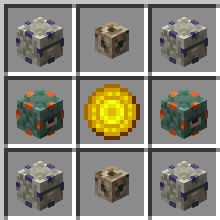
Rascal Token

Abilities
- Block break speed +65%
- Scale -0.18
- Max health -25%
- Haste I under y=0
- 0.5% chance getting Strength III 15 seconds
Recipe

Iron Golem Token
Abilities
- Permanent Hero of the Village V
- Max health +4
- Attack damage +2
- Attack speed -10%
- Knockback resistance +0.5
- Entity interaction range +0.5
- Block interaction range +0.5
Recipe
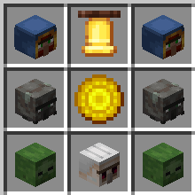
Slime Token

Abilities
Stage 1 (Large) Stats
- Max health +20%
- Attack damage +10%
Stage 2 (Medium)
- Max health -20%
- Scale -0.18
- Attack damage -10%
- Speed +10%
Stage 3 (Smallest)
- Max health -60%
- Scale -0.45
- Step Height -0.3
- Attack damage -25%
- Entity interaction range -0.5
- Block range -1
- Instead of dying get smaller until stage 3
- Eat 16 slime blocks to grow bigger again
Recipe

Creaking Token
Abilities
- Entity interaction range +0.5
- Step height +0.5
- Sneak speed +0.25
- Double damage if you deal first hit on someone
At night time gain the following
- +15% attack damage
- Entity interaction range +0.5
- Speed +15%
Recipe
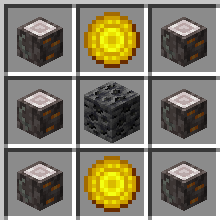
Illusioner Token
Abilities
- Speed +10%
- Attack damage +5%
- Max health +2
- Instead of dying summon 4 clones (15 minute cooldown)
- Also get Speed III for 15 seconds
- 0.5% chance of applying blindness for 15 seconds
Recipe

Evoker heads
Dragon Token

Abilities
- Max health +30%
- Speed +10%
- No fall damage
- Knockback resistance +0.5
- Permanent Resistance I
- 5% chance when being hit of getting Regeneration III for 5 seconds
Recipe

Bat Token

Abilities
- Speed +20%
- Scale -0.18
- Max health -15%
- 10% chance of applying glowing on hit for 5 minutes
- If they have glowing 2.5% chance of applying blindness 1 for 20 seconds on hit
Recipe
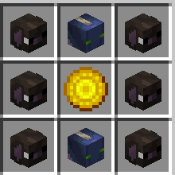
Silverfish Token (Secret)
Abilities
- Instantly break stone or cobblestone with hands
- Scale -0.28
- Max health -35%
- Comboing someone 5 times: spawns 10 friendly silverfish
No public recipe.
Classes
Classes dictate what certain actions you can do
100000 coins to change your classes can change your class every 3 days
Randomly roll both a Primary and Niche class than pick one of the 2
Pity of 3 rerolls after 3 rerolls you get to pick your class
Primary Classes
Chef
- Reduced cost for crafting golden apples
- Only class that can craft enchanted golden apples
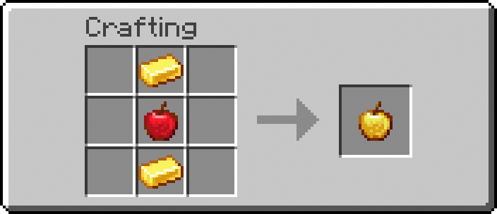
Brewer
- Only class that can craft splash potions
- Only class that can make instant health
Scholar
- 50% more exp from things
- Only class that can craft xp bottles
Miner
- Cheaper Netherite Ingots
- Only class that can craft cobwebs

Armorer
- Cheaper diamond armor
- Only class that can craft netherite armor
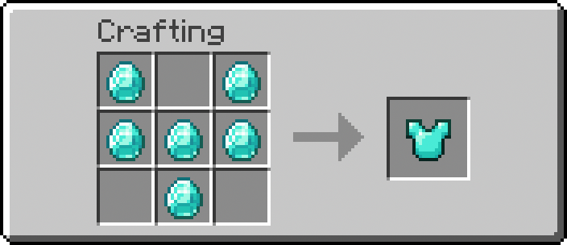


Niche Classes
Priest
- Only class that can craft revive beacons and personal authority
- Permanent regeneration I
- +2 Max Health
Trader
- 10% more money from selling things
- Can put chests on horses
- Extra nine inventory slots (/pack)
Lumberjack
- Can cut down whole trees by just breaking one log
- +1 attack damage with an axe
- +0.5 block interaction range
Charioteer
- +15% speed on horses
- +1 attack damage with spear
- +10 max health to mount
Gladiator
- Buffed golden apples
- +1 attack damage with sword
- +0.5 entity interaction range
Chaos Meter
Chaos shifts as the world changes. Check the current level in game with /chaosmeter.
| Level | Score | Effects |
|---|---|---|
| Absolute Serenity | 5 | +4 Max Health, Shop discount of 15%, Haste 2, Regeneration 1, change difficulty to normal, All timers 50% slower |
| Deeply Placid | 4 | +4 Max Health, Shop discount of 10%, Haste 2, Regeneration 1, change difficulty to normal, All timers 40% slower |
| Noticeably Tranquil | 3 | +2 Max Health, Shop discount of 10%, Haste 1, Regeneration 1, change difficulty to normal, All timers 30% slower |
| Mainly Quiet | 2 | +2 Max Health, Shop discount of 5%, Haste 1, Regeneration 1, All timers 20% slower |
| Vaguely Restless | 1 | +2 Max Health, Shop discount of 5%, All timers 10% slower |
| Normal | 0 | Everything normal |
| Simmering | -1 | +5% attack damage, Shop price spike of 5%, All timers 10% faster |
| Turbulent | -2 | +5% attack damage, Shop price spike of 10%, All timers 20% faster |
| Volatile | -3 | +5% attack damage, Shop price spike of 15%, Every mob gets Strength 1, All timers 30% faster |
| Frenetic | -4 | +10% attack damage, Shop price spike of 15%, Every mob gets Strength 2, Every mob gets Speed 2, , All timers 40% faster |
| Total Pandemonium | -5 | +10% attack damage, Shop price spike of 15%, Every mob gets Strength 2, Every mob gets Speed 2, All timers 50% faster |
What moves the meter
| Event | Change |
|---|---|
| Token being destroyed | -1 |
| Starting a war | -0.5 |
| Killing a player | -0.05 |
| Killing a player with hostile or enemy relations | -0.1 |
| Changing relations down to enemy | -0.05 |
| Taking a city | -0.15 |
| Taking 5000 blocks of land | -0.01 |
| Breaking a non aggression pact | -0.1 |
| Everyday | +0.05 |
| Moving relations to allied | +0.1 |
| Reviving a player | +0.15 |
| Making a peace treaty | +0.25 |
| Forming a city | +0.05 |
| Making a non aggression pact | +0.15 |
Spawn Zone
(-480, 64) to (-100, 447)
- Unclaimable
- Against the rules to grief
Danger Zone
(-100, -100) to (100, 100)
- Unclaimable
- Cant break blocks not placed by players
- Lose personal authority when dying to a player
- Relationships dont matter (Everyone is Hostile)
- Can attack teammates no matter the pvp law
Token Crafter
- Token Crafter only works when 8 or more people are on (2pm-8pm est)
- Craft tokens at 0, 150, 0
- To craft Tokens you must put the recipe in the crafter then wait 15 minutes and the Tokens will be back in the crafter
- Can tp to danger zone during a craft with /dangerzone
Reputation
- Every player has 5 positive reps & 3 negative reps that they can give out with
/rep - Having a negative rep makes your name red
- Having a positive rep makes your name green